Wor(l)dbuilding
Mémoire sur les langues inventées, imaginées et construites dans des œuvres de fiction issues de la culture populaire. Il prend comme études de cas des langues imaginaires issues de domaines variés, tels que le cinéma, la littérature ou encore du jeu vidéo. Le système du tengwar paru dans Le Seigneur des Anneaux, de l’heptapode B du film Premier Contact et du trunic issu du jeu vidéo Tunic sont les trois études de cas qui structurent ce mémoire. A thesis on invented, imagined, and constructed languages in works of fiction from popular culture. It examines imaginary languages from various fields such as cinema, literature, and video games. The Tengwar system from The Lord of the Rings, Heptapod B from the film Arrival, and Trunic from the video game Tunic are the three case studies structuring this thesis.
― 2025
― couverture sérigraphiée silkscreen printed cover
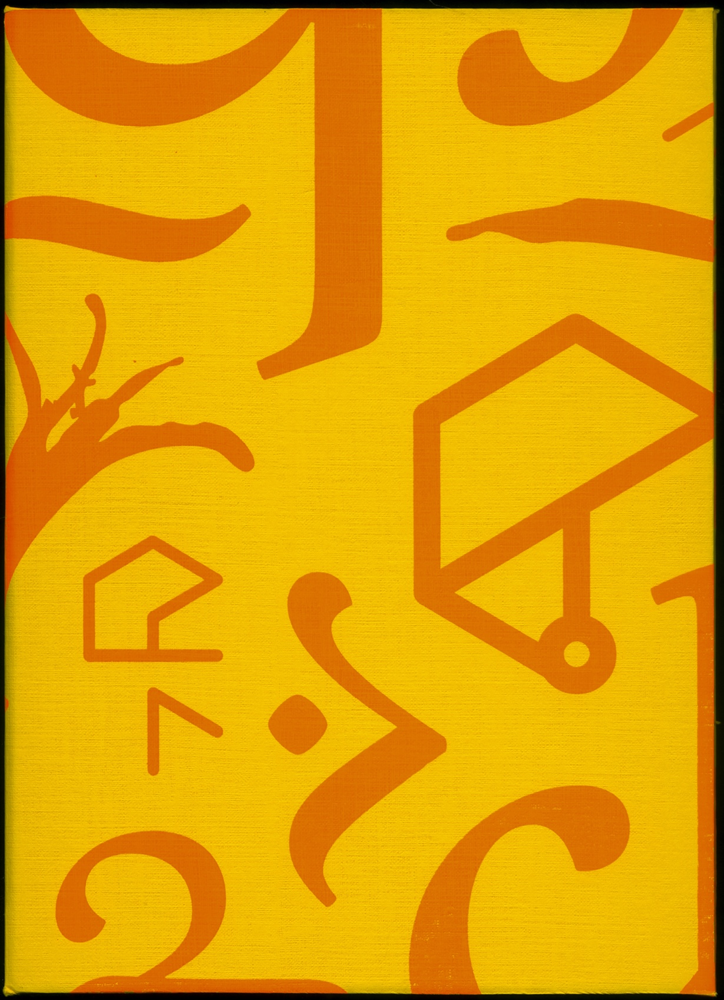
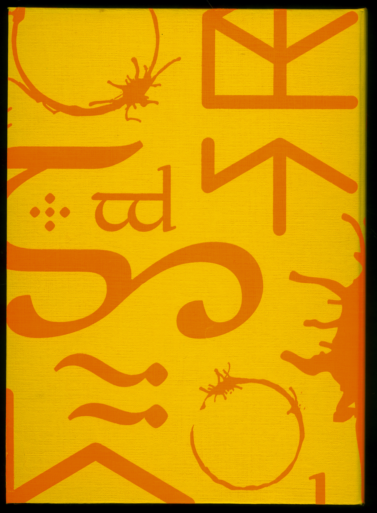
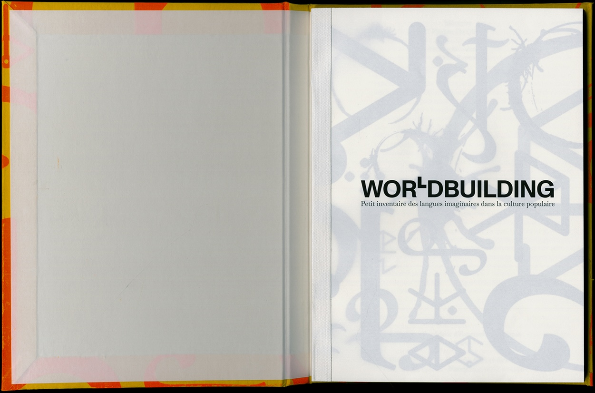
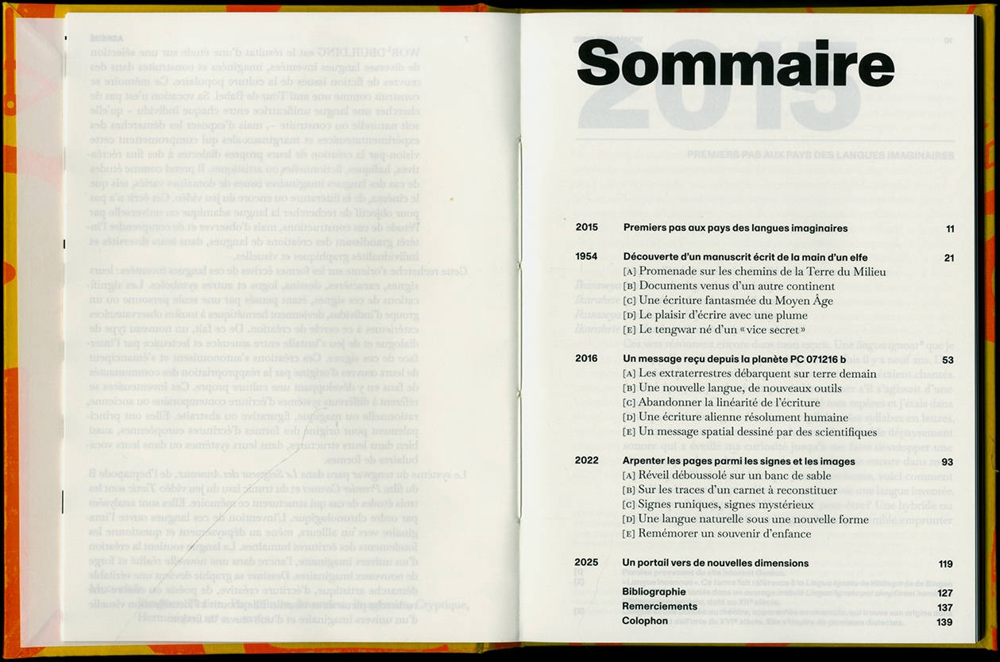
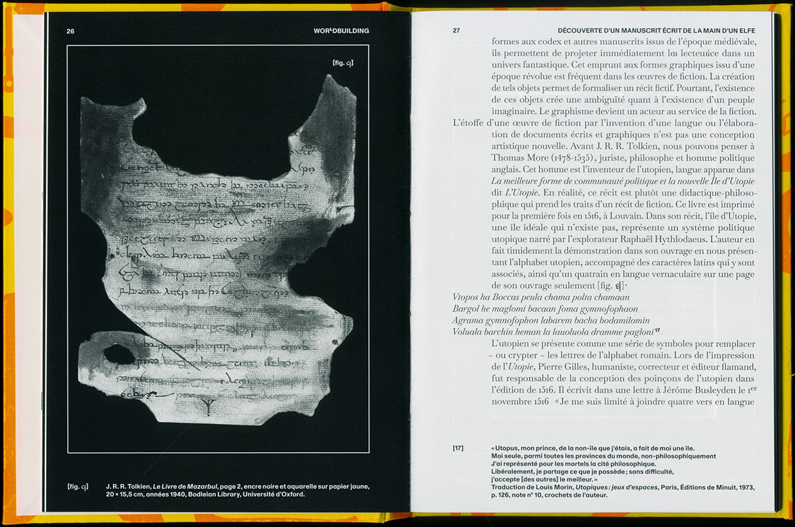
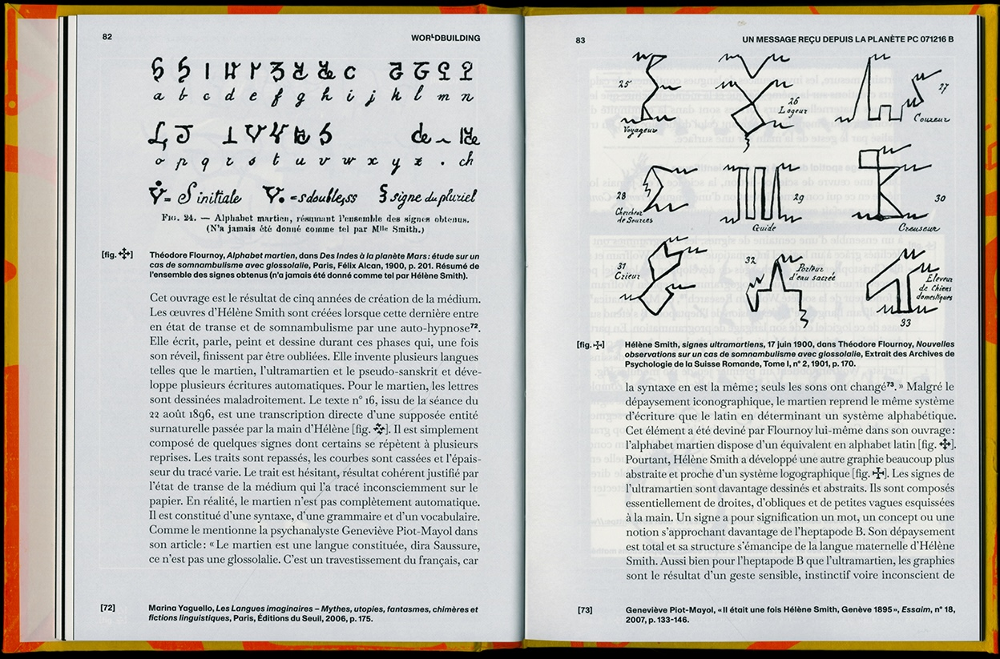
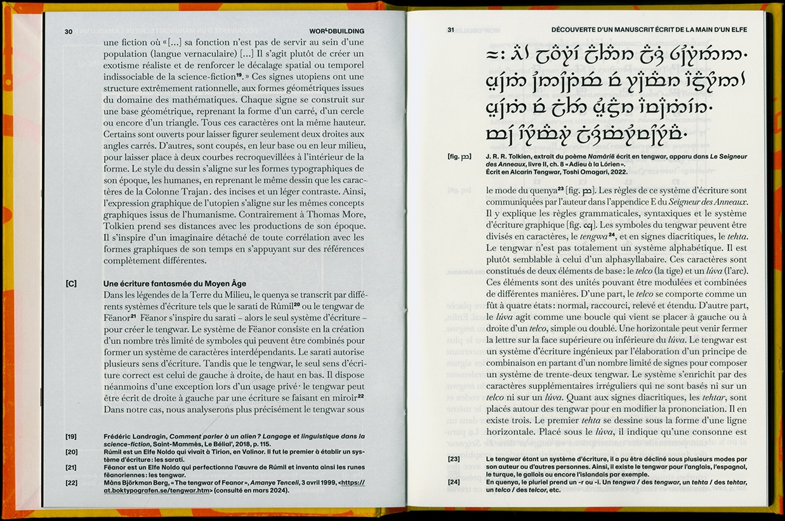
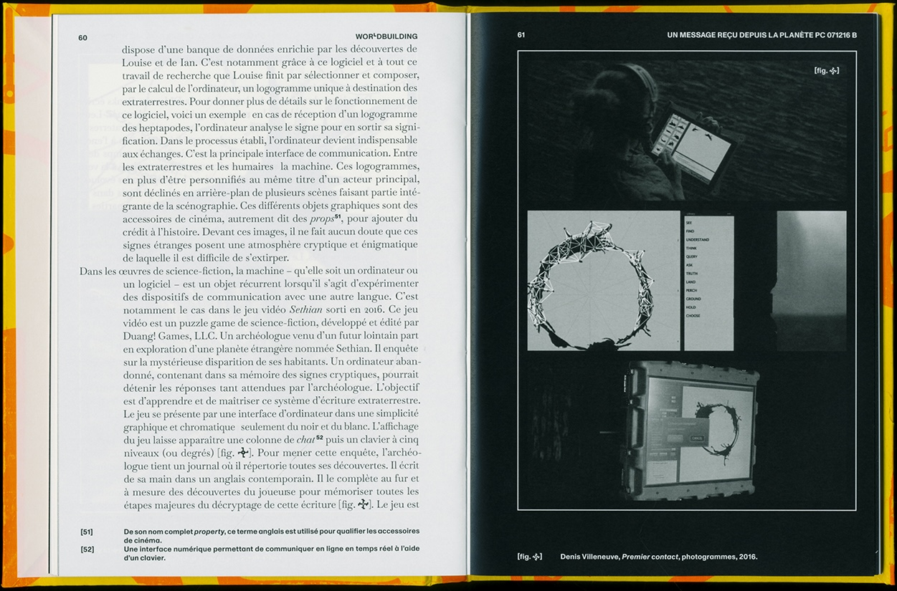
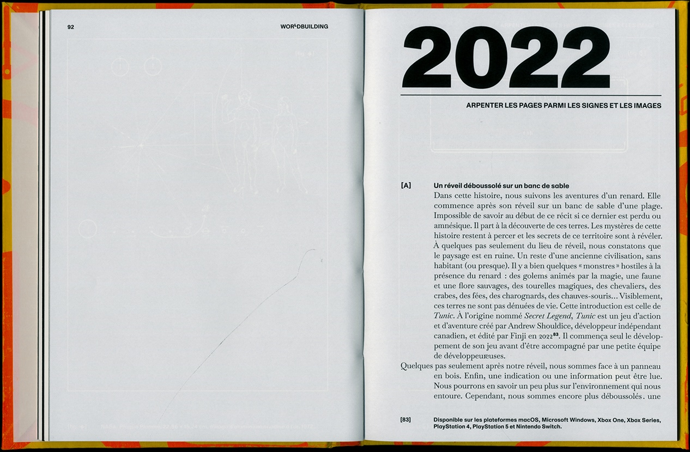
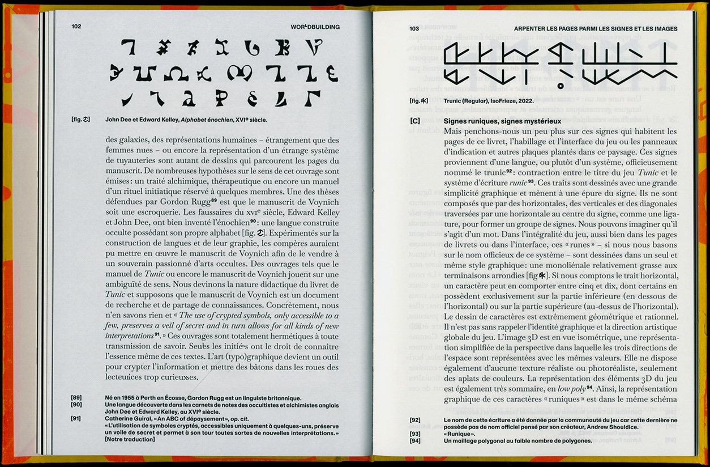
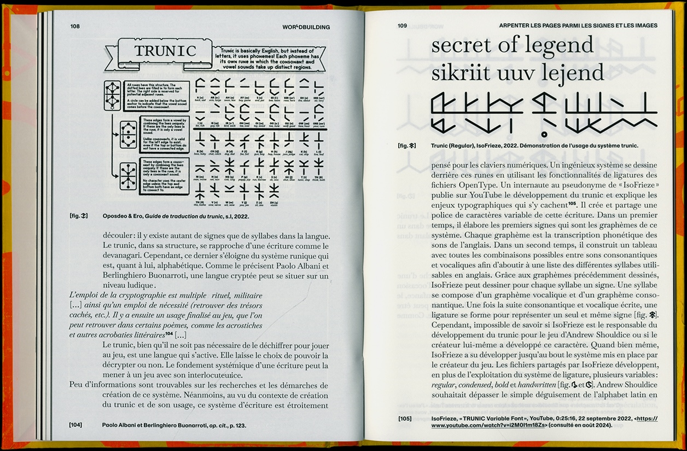